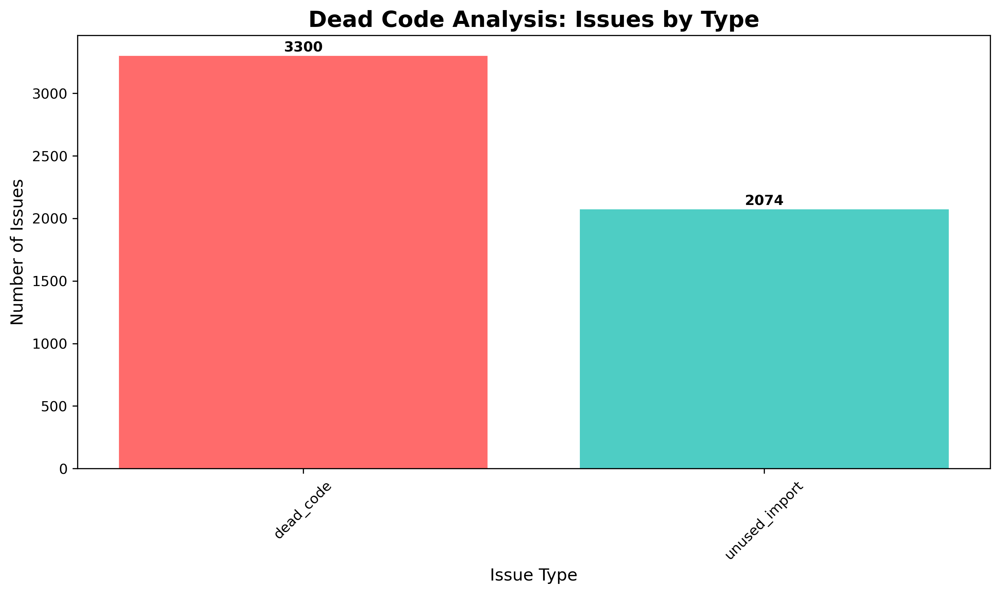
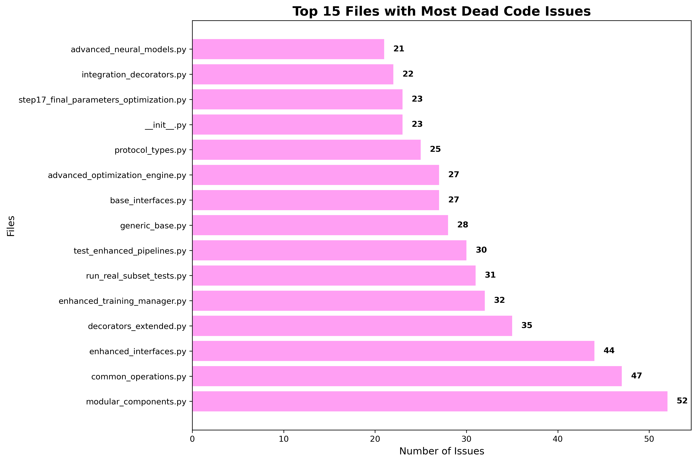
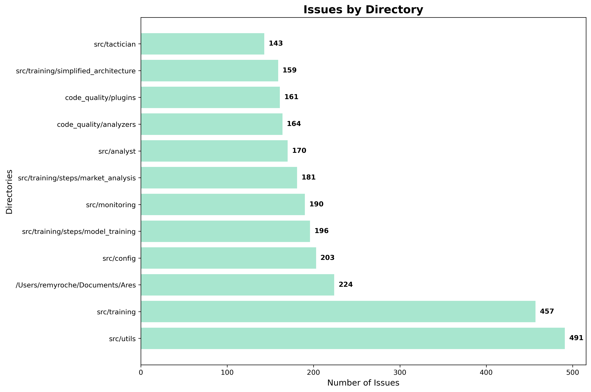
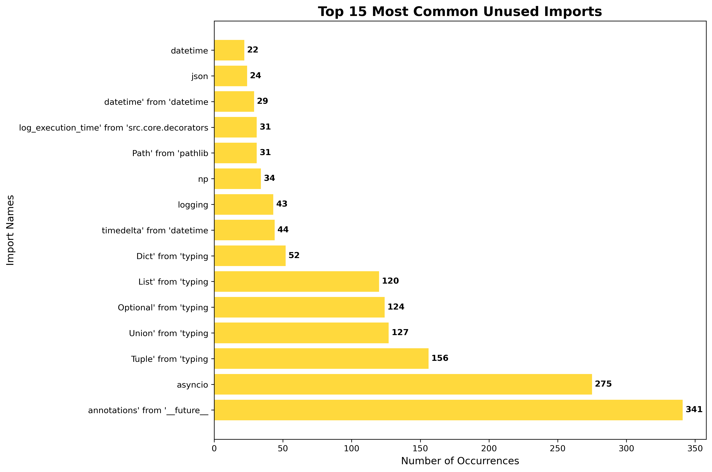

🔍 Dead Code Analysis Report
Ares Project
Executive Summary
Comprehensive dead code analysis of the Ares trading system project, identifying unused code, imports, and potential cleanup opportunities.
📊 Analysis Overview
Project Root: /Users/remyroche/Documents/Ares
Processing Time: 7.76 seconds
Analysis Date: $(date)
📋 Issue Breakdown
Dead Code Issues: 3,300
Functions, classes, and methods that appear to be defined but never used.
Unused Imports: 2,074
Import statements that are not referenced anywhere in the code.
📁 Top Files with Issues
src/training/simplified_architecture/modular_components.py
52 issues
src/utils/common_operations.py
47 issues
src/training/simplified_architecture/enhanced_interfaces.py
44 issues
src/core/domain/decorators_extended.py
35 issues
src/training/enhanced_training_manager.py
32 issues
code_quality/run_real_subset_tests.py
31 issues
code_quality/tests/test_enhanced_pipelines.py
30 issues
src/core/generic_base.py
28 issues
src/interfaces/base_interfaces.py
27 issues
src/training/steps/market_analysis/step17_final_parameters_optimization/advanced_optimization_engine.py
27 issues
📦 Most Common Unused Imports
annotations from __future__
341 occurrences
asyncio
275 occurrences
Tuple from typing
156 occurrences
Union from typing
127 occurrences
Optional from typing
124 occurrences
List from typing
120 occurrences
Dict from typing
52 occurrences
timedelta from datetime
44 occurrences
logging
43 occurrences
np (numpy)
34 occurrences
⚙️ Most Common Unused Functions
decorator
56 occurrences
wrapper
41 occurrences
objective
28 occurrences
get_name
17 occurrences
forward
17 occurrences
get_required_inputs
17 occurrences
get_produced_outputs
17 occurrences
get_dependencies
17 occurrences
get_status
16 occurrences
get_description
16 occurrences
📂 Issues by Directory
src/utils
491 issues
src/training
457 issues
root
224 issues
src/config
203 issues
src/training/steps/model_training
196 issues
src/monitoring
190 issues
src/training/steps/market_analysis
181 issues
src/analyst
170 issues
code_quality/analyzers
164 issues
code_quality/plugins
161 issues
📊 Visualizations
Issues by Type

Top Files with Issues

Issues by Directory

Top Unused Imports

💡 Recommendations
Clean up unused imports: Remove 2,074 unused imports to improve startup time and reduce memory usage.
Review dead code: Investigate 3,300 potentially unused functions and classes for removal or documentation.
Focus on high-impact files: Start with files having the most issues for maximum cleanup impact.
Automate cleanup: Use automated tools like autoflake or unimport to remove obvious unused imports.
Fix syntax errors: Address syntax errors in 51 files that couldn't be parsed during analysis.
Implement CI checks: Add dead code detection to continuous integration to prevent future accumulation.
📈 Potential Impact
🔧 Next Steps
- Immediate Actions:
- Run automated import cleanup tools (autoflake, unimport)
- Fix syntax errors in the 51 problematic files
- Review and remove obvious unused imports
- Short-term (1-2 weeks):
- Focus on files with 20+ issues
- Review unused functions in core modules
- Implement dead code detection in CI/CD
- Long-term (1-2 months):
- Systematic review of all dead code candidates
- Refactor or remove unused components
- Establish code quality standards